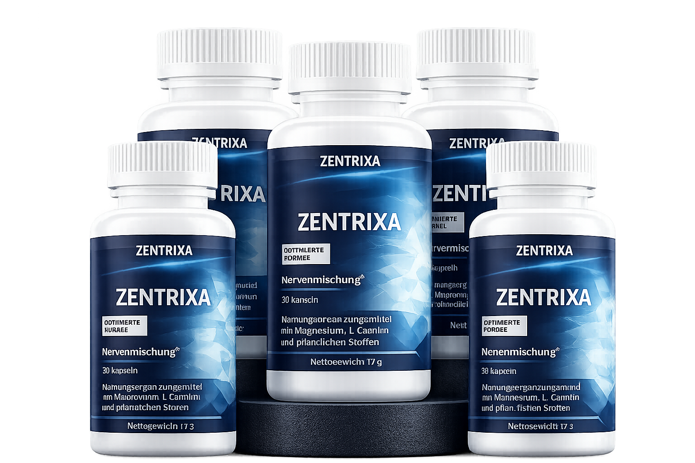

Wichtige Mitteilung!
Klicken Sie auf JA! ZU MEINER BESTELLUNG HINZUFÜGEN,um sich Ihren 6-Monats-Vorrat an Zentrixa mit diesem exklusiven Angebot zu sichern!

ZU MEINER BESTELLUNG HINZUFÜGEN ✅ 60-Tage Geld-zurück-Garantie Versandkostenfrei innerhalb Deutschlands Nein, danke.
Warum machen wir das?
Hallo, ich bin's wieder. Sobald Sie mit Zentrixa beginnen,
werden Sie dieses befreiende Gefühl kennenlernen — zu wissen,
dass Ihr Körper wieder Unterstützung bekommt … besonders wenn
Sie täglich mit diesem stechenden, ausstrahlenden Schmerz im
unteren Rücken und Bein kämpfen, mit dem Kribbeln, das Ihnen den
Schlaf raubt, und dem beklemmenden Gefühl, einfache Alltagsdinge
nicht mehr unbeschwert tun zu können.
Die Wahrheit ist: Bei regelmäßiger Anwendung unterstützt Zentrixa
die natürlichen Erholungsprozesse Ihres Körpers. Die Steifheit
am Morgen, das Ziehen beim Treppensteigen und das Unbehagen beim
langen Sitzen können sich mit der Zeit deutlich verändern —
und Sie gewinnen Schritt für Schritt mehr Bewegungsfreiheit
zurück.
Und das Beste daran: Wenn Sie einmal die Wirkung einer Formel
gespürt haben, die speziell zur Unterstützung des
Ischiasnerv-Bereichs entwickelt wurde, werden Sie keinen Tag
mehr ohne diesen täglichen Rückhalt verbringen wollen.
Doch wie ich im Video erwähnt habe, leben wir in unsicheren
Zeiten. Die hochwertigen Inhaltsstoffe von Zentrixa sind schwer
zu beschaffen — und das zwingt uns zu äußerster Vorsicht bei
der Produktion.
Unser Versprechen ist es, die maximale Qualität der Formel zu
bewahren, die mit einem klaren Ziel entwickelt wurde: den Körper
mit gezielten Nährstoffen zu versorgen, die das Wohlbefinden im
Bereich des Ischiasnervs von innen heraus unterstützen.
Sollte der internationale Handel unterbrochen werden, müssten
wir die Produktion vorübergehend stoppen, bis sich die Lage
stabilisiert.
Deshalb bestehe ich darauf, dass Sie sich noch heute einen
zusätzlichen Vorrat an Zentrixa sichern — zu einem exklusiven
Vorzugspreis, der nur auf dieser Seite verfügbar ist!
Heute kann ein entscheidender Wendepunkt in Ihrem täglichen
Umgang mit Ischias-Beschwerden sein — und der einzige Moment,
um sich Ihren Zentrixa-Vorrat zu sichern.
Ich würde es wirklich bedauern, wenn Sie später zurückblicken
und sich ärgern würden, weil wir ausverkauft waren und Sie Ihre
Chance verpasst haben, sich zu versorgen, obwohl Sie es hätten
tun können.
Was passiert, wenn Sie Zentrixa absetzen?
Schon wenige Tage ohne Zentrixa können ausreichen, damit die
Unterstützung für Ihren Körper nachlässt und der mühsam
aufgebaute Erholungsprozess ins Stocken gerät.
Sie werden merken, wie das Ziehen im Rücken, das Kribbeln im
Bein und die Steifheit beim Aufstehen, die Sie bereits besser
unter Kontrolle hatten, langsam zurückkehren … und das neue
Gefühl von Leichtigkeit und Bewegungsfreiheit beginnt zu
verblassen.
Deshalb machen unsere treuesten Kunden Zentrixa zu einem festen
Bestandteil ihres Alltags — als tägliche Unterstützung, um den
Körper kontinuierlich zu versorgen.
Können Sie sich vorstellen, wie frustrierend es wäre, wochen-
oder monatelang ohne das Produkt auszukommen, obwohl Ihr Körper
gerade dabei war, sich spürbar zu erholen?
Sie wissen bereits, was zu tun ist:
Fügen Sie jetzt 6 zusätzliche Flaschen Zentrixa zu Ihrer Bestellung hinzu — zum exklusiven Vorzugspreis von nur 29 € pro Flasche (inkl. 20% MwSt.: 34,80 €), bevor wir ausverkauft sind.
Und wo ist der Haken?
Ganz ehrlich? Es gibt keinen.
Wenn Sie 6 Flaschen auf einmal bestellen, sparen wir bei der
Logistik — und geben diese Ersparnis direkt an Sie weiter.
Viele unserer treuesten Kunden — die sich die beste Chance auf
anhaltende Unterstützung im Alltag sichern wollen — bevorzugen
es, immer einen Vorrat zu Hause zu haben.
Das ist die kluge Entscheidung, um Unterbrechungen zu vermeiden
— selbst in unsicheren Zeiten.
So profitieren Sie weiterhin jeden Tag von der Wirkung von
Zentrixa … um Mobilität, Komfort und das Wohlbefinden im
Bereich des Ischiasnervs zu unterstützen — und das für nur wenige
Cent am Tag.
Letztes und exklusives Angebot. Dies ist eine
einmalige Gelegenheit, sich einen 6-Monats-Vorrat Zentrixa zu
diesem Vorzugspreis zu sichern — und sie verschwindet, sobald Sie
diese Seite verlassen.

Wichtig: Zentrixa wird nicht in Geschäften oder
auf anderen Webseiten verkauft. Es ist ausschließlich auf dieser
Seite erhältlich — und dies könnte Ihre letzte Chance sein, es
zu diesem Sonderpreis zu bekommen.
Jetzt ist der richtige Zeitpunkt, in das Wohlbefinden Ihres
Körpers zu investieren — für heute und für die Zukunft.
Und wenn Sie jemanden kennen, der ebenfalls von einer
täglichen Unterstützung bei Ischias-Beschwerden profitieren
könnte, dann könnte dies ein Akt der Fürsorge sein, um Ihrer
Familie diesen Rückhalt zu ermöglichen.
Klicken Sie auf den Button
"JA! ZU MEINER BESTELLUNG HINZUFÜGEN" unten und
fügen Sie jetzt 6 Flaschen Zentrixa zu Ihrer Bestellung hinzu.
Das ist ein kompletter 6-Monats-Vorrat
für nur 29 € pro Flasche (inkl. 20% MwSt.: 34,80 €) – inklusive kostenlosem Versand!
Wir sehen uns auf der nächsten Seite.
ZU MEINER BESTELLUNG HINZUFÜGEN ✅ 60-Tage Geld-zurück-Garantie Versandkostenfrei innerhalb Deutschlands Nein, danke.
Häufig gestellte Fragen
Ist Zentrixa das Richtige für mich?
Zentrixa wurde für alle entwickelt, die unter Beschwerden im Bereich des Ischiasnervs leiden und aktiv etwas für ihr Wohlbefinden tun möchten. Die Formel zielt darauf ab, den Körper mit ausgewählten Nährstoffen zu versorgen, die die Nervengesundheit und das allgemeine Wohlbefinden unterstützen. Wenn Sie unter ausstrahlenden Schmerzen, Kribbeln oder Steifheit leiden, kann Zentrixa eine sinnvolle Ergänzung Ihres Alltags sein. Bei konsequenter Anwendung erhält Ihr Körper die nötige Unterstützung für seinen natürlichen Erholungsprozess.
Ist Zentrixa sicher?
Absolut. Zentrixa ist eine natürliche Formel,
hergestellt mit sorgfältig ausgewählten,
gentechnikfreien (non-GMO) Inhaltsstoffen. Sicherheit
und Qualität stehen bei uns an erster Stelle.
Als Vorsichtsmaßnahme empfehlen wir, dass Sie Ihrem
Arzt die Inhaltsstoffliste zeigen, damit Sie sich
vollkommen sicher fühlen können.
Wie viele Flaschen sollte ich bestellen?
Ihr 6-Monats-Vorrat deckt die erste Unterstützungsphase
ab — die Zeit, in der Ihr Körper kontinuierlich mit
den wichtigen Nährstoffen versorgt wird und sich
schrittweise erholen kann.
Für eine langfristige Unterstützung empfehlen viele
unserer Kunden eine fortlaufende Einnahme, um die
positiven Effekte zu erhalten:
• Gezielte Nährstoffversorgung für den Ischiasbereich
• Unterstützung der natürlichen Beweglichkeit
• Täglicher Beitrag zum allgemeinen Wohlbefinden
Deshalb ist dieses Sparpaket mit 6 Flaschen ideal für
alle, die eine zuverlässige, langfristige Lösung
suchen.
Was, wenn Zentrixa bei mir nicht wirkt?
Sie sind durch unsere 60-Tage-Garantie vollständig
geschützt. Wenn Sie in diesem Zeitraum keine spürbare
Verbesserung Ihres Wohlbefindens bemerken, senden Sie
die Flaschen einfach zurück — und wir erstatten Ihnen
100 % Ihres Geldes. Ganz ohne Aufwand.
Entweder Sie spüren den Unterschied — oder Sie zahlen
keinen Cent.
Was soll ich jetzt tun?
Die Entscheidung ist einfach. Klicken Sie auf den
Button unten, um das 6-Flaschen-Sparpaket mit dem
exklusiven Rabatt zu Ihrer Bestellung
hinzuzufügen.
Dies ist Ihre einzige und letzte Chance, sich dieses
Angebot zu sichern.
Sie werden zu unserer 100 % sicheren Bezahlseite
weitergeleitet, um Ihre Angaben zu bestätigen. Sobald
Sie das getan haben, macht sich Ihr Vorrat auf den
Weg zu Ihnen.
Zögern Sie nicht — dieses Angebot wird nicht
zurückkehren. Sichern Sie sich jetzt Ihren Vorrat.
ZU MEINER BESTELLUNG HINZUFÜGEN ✅ 60-Tage Geld-zurück-Garantie Versandkostenfrei innerhalb Deutschlands Nein, danke.